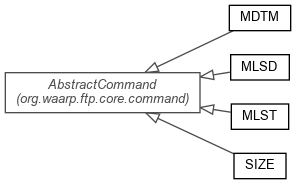

JavaScript is disabled on your browser.
Overview
Package
Class
Use
Tree
Deprecated
Index
Help
Prev Package
Next Package
Frames
No Frames
All Classes
Package org.waarp.ftp.core.command.rfc3659
FTP RFC 3659 related command
See:
Description

Class Summary
Class
Description
MDTM
MDTM command
MLSD
MLSD command
MLST
MLST command
SIZE
SIZE command
Package org.waarp.ftp.core.command.rfc3659 Description
FTP RFC 3659 related command
Overview
Package
Class
Use
Tree
Deprecated
Index
Help
Prev Package
Next Package
Frames
No Frames
All Classes
Copyright © 2009–2015
Waarp
. All rights reserved.